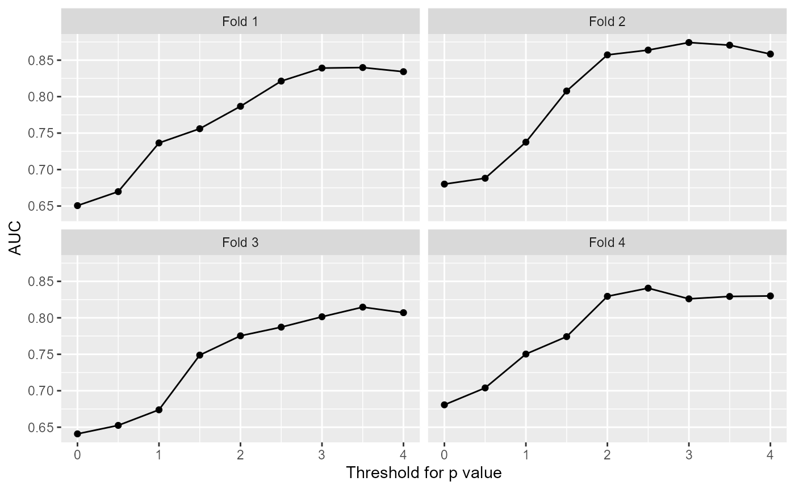
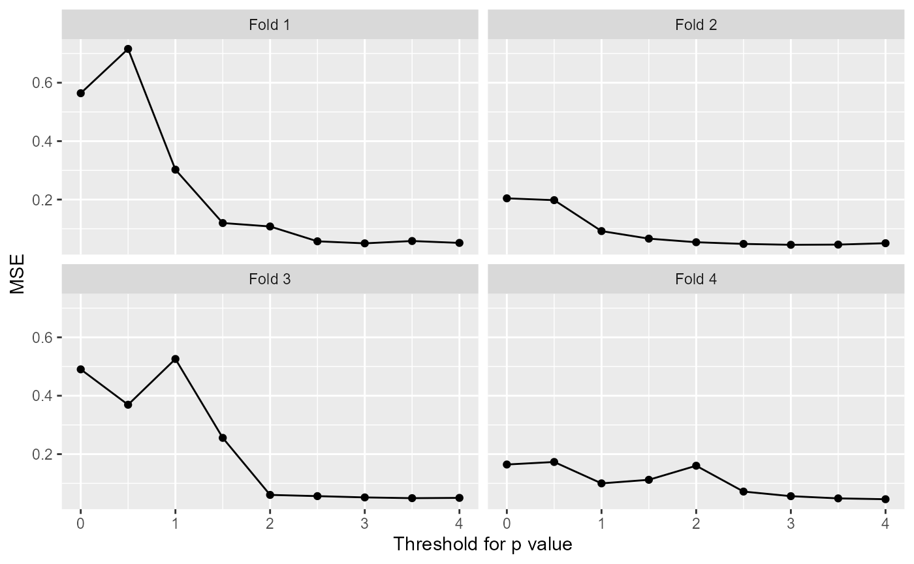
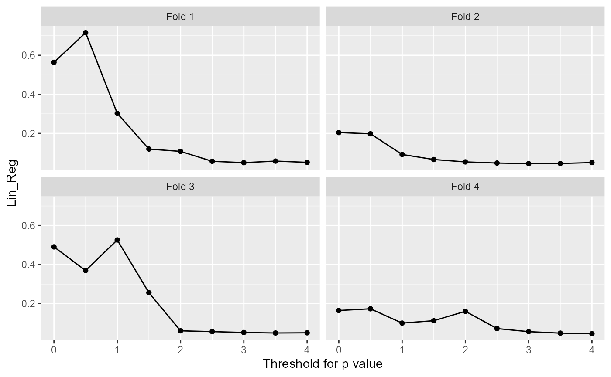
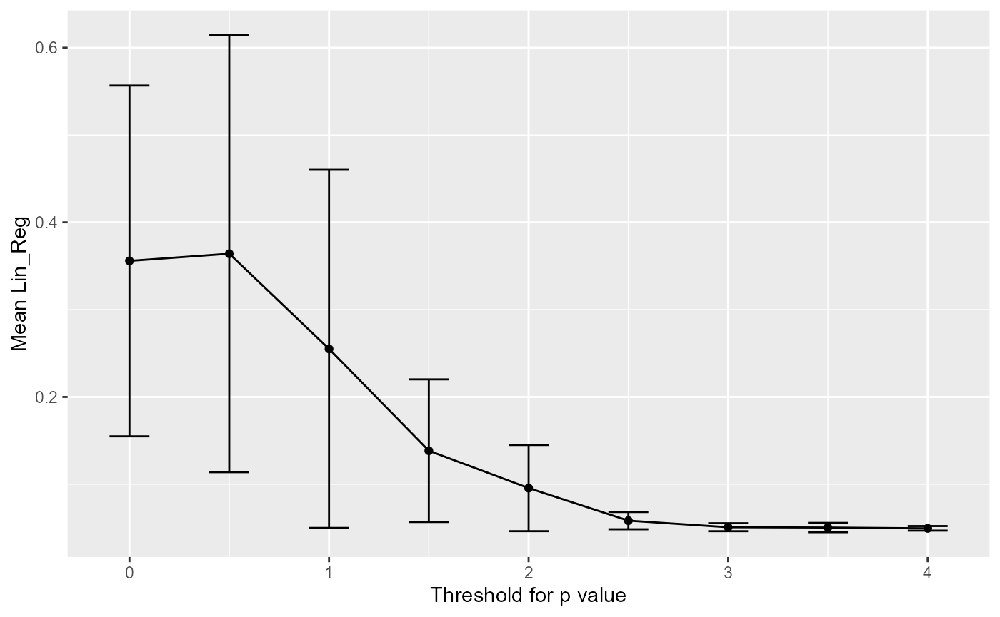
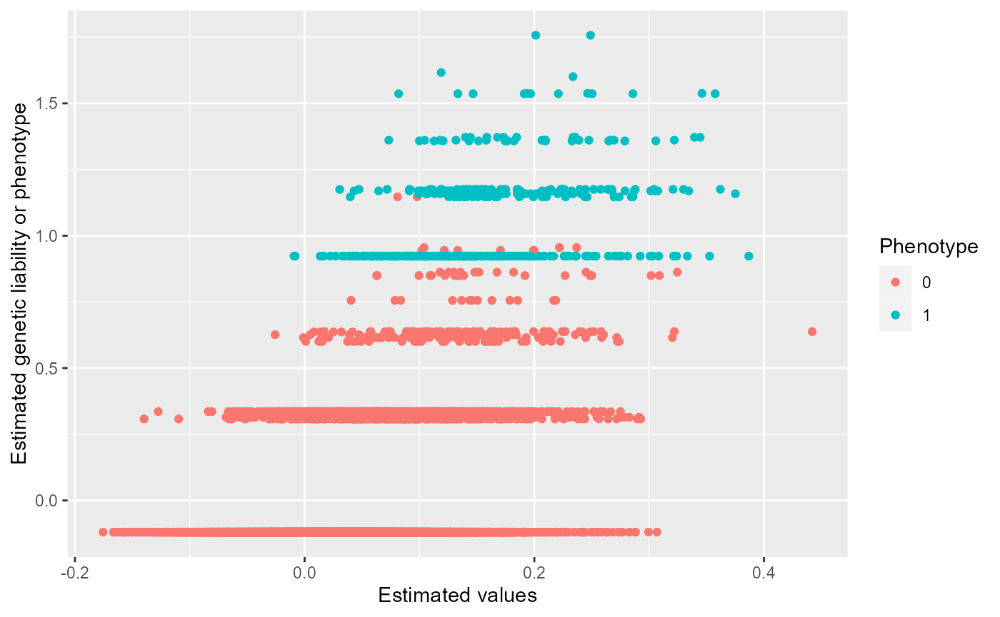
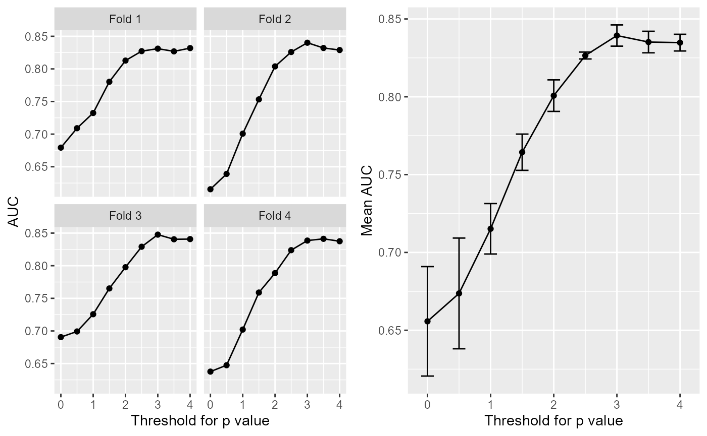
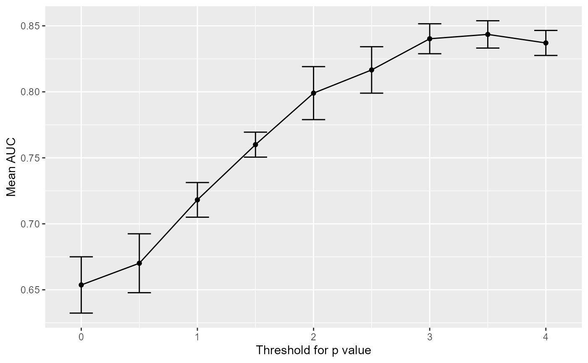
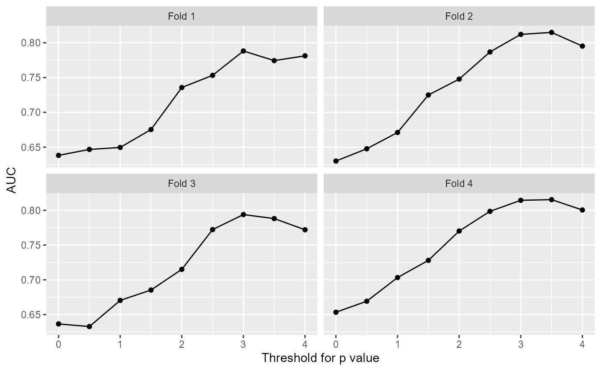
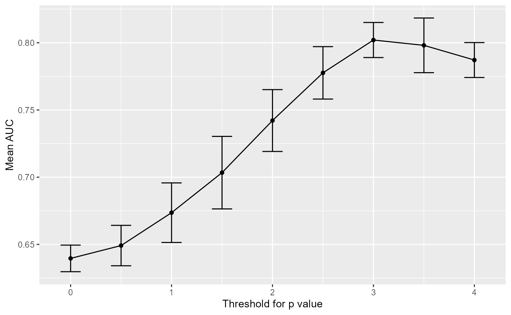

Prediction
Prediction.Rmd## Warning: package 'bigsnpr' was built under R version 4.0.5## Loading required package: bigstatsr## Warning: package 'bigstatsr' was built under R version 4.0.5## Warning: package 'tidyverse' was built under R version 4.0.5## -- Attaching packages --------------------------------------- tidyverse 1.3.1 --## v ggplot2 3.3.6 v purrr 0.3.4
## v tibble 3.1.6 v dplyr 1.0.8
## v tidyr 1.2.0 v stringr 1.4.0
## v readr 2.1.2 v forcats 0.5.1## Warning: package 'tibble' was built under R version 4.0.5## Warning: package 'tidyr' was built under R version 4.0.5## Warning: package 'readr' was built under R version 4.0.5## Warning: package 'dplyr' was built under R version 4.0.5## Warning: package 'forcats' was built under R version 4.0.5## -- Conflicts ------------------------------------------ tidyverse_conflicts() --
## x dplyr::filter() masks stats::filter()
## x dplyr::lag() masks stats::lag()
data = snp_attach("genetic_data.rds")
est <- genstats::LTFH(data = data, n_sib = 2) %>%
select(., contains("est"))
prs <- PRS_cross(data = data, y01 = est[[1]], cross_folds = 4)
prs_plot(PRS = prs, data, 'AUC')
prs_plot(PRS = prs, data, 'MSE')
prs_plot(PRS = prs, data, 'Lin_Reg')
m = pred_model(data, est[[1]], 3)
test_set <- snp_attach("genetic_data_test.rds")
pred = prediction(test_set, m, 3)
preds = (pred > 0.5)-0
cbind('predictive positive' = preds[preds==1], 'True value'=test_set$fam$pheno_0[preds==1])## predictive positive True value
## 92 1 0
## 161 1 0
## 170 1 0
## 219 1 0
## 223 1 0
## 269 1 0
## 276 1 0
## 280 1 0
## 287 1 0
## 318 1 0
## 375 1 0
## 470 1 0
## 494 1 0
## 560 1 0
## 574 1 1
## 591 1 0
## 607 1 0
## 624 1 0
## 641 1 0
## 758 1 0
## 772 1 0
## 793 1 0
## 802 1 0
## 840 1 0
## 844 1 0
## 859 1 0
## 881 1 1
## 885 1 0
## 926 1 0
## 947 1 0
## 985 1 0
## 996 1 0
## 1002 1 0
## 1115 1 0
## 1139 1 0
## 1148 1 0
## 1167 1 0
## 1218 1 0
## 1225 1 0
## 1316 1 0
## 1327 1 0
## 1344 1 0
## 1346 1 0
## 1349 1 1
## 1355 1 0
## 1438 1 0
## 1520 1 0
## 1522 1 0
## 1563 1 0
## 1618 1 0
## 1639 1 0
## 1658 1 0
## 1677 1 0
## 1703 1 0
## 1730 1 0
## 1765 1 0
## 1781 1 0
## 1783 1 0
## 1787 1 0
## 1926 1 0
## 1947 1 0
## 1963 1 0
## 1973 1 0
## 1987 1 0
## 1992 1 0
## 2176 1 0
## 2269 1 0
## 2275 1 0
## 2313 1 0
## 2321 1 0
## 2346 1 0
## 2454 1 0
## 2455 1 0
sum(test_set$fam$pheno_0[test_set$fam$pheno_0==1])## [1] 110
sum(preds == test_set$fam$pheno_0)## [1] 2323
df = prs %>% do.call('rbind', .)
df = df[order(as.numeric(row.names(df))),]
plot(df[,7], data$fam$pheno_0)
prs <- PRS_cross(data = data, y01 = data$fam$pheno_0, cross_folds = 4)## Warning: 'y.train' is composed of only two different levels.
## Warning: 'y.train' is composed of only two different levels.
## Warning: 'y.train' is composed of only two different levels.
## Warning: 'y.train' is composed of only two different levels.
prs_plot(prs, data = data)
prs_plot(prs, data, 'AUC')